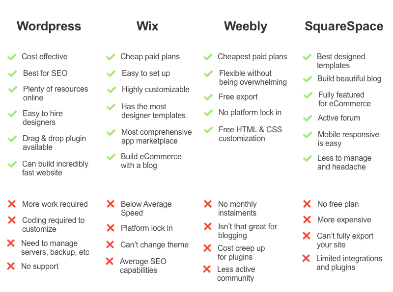
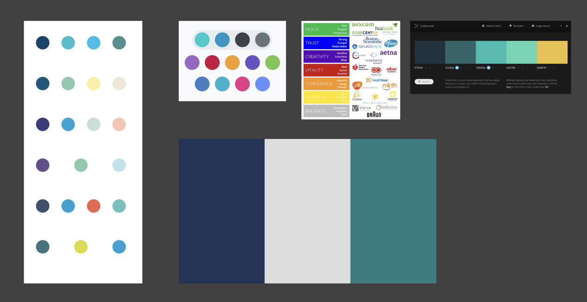
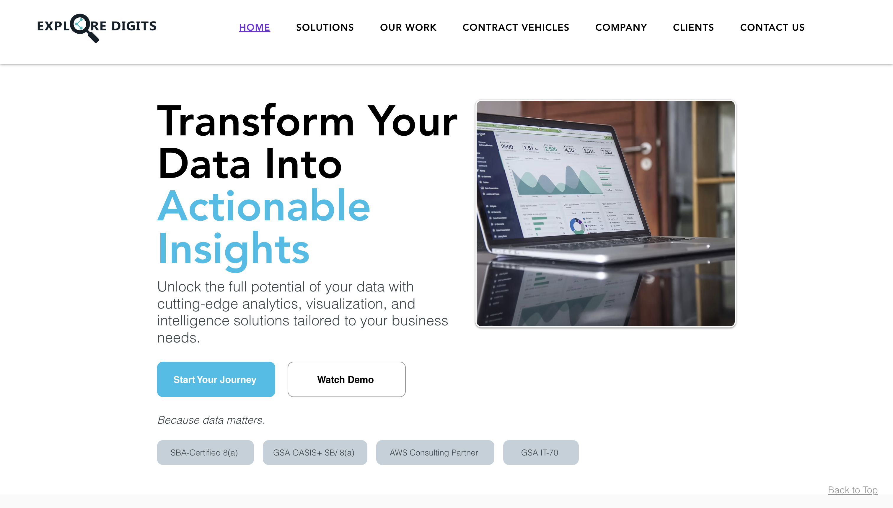

Working with Wix
The Problem
One of the first projects that I took on when I joined Explore Digits was to redo their website. The website was made in Weebly when the company was first founded, so it was very outdated and didn’t have a lot of information. I was tasked with creating a new design for the website, and figuring out if we should stay hosting the website under Weebly, or switch to another website hosting service.
The How of Solving It
I had used Weebly before in middle school when building websites, so I wasn’t as familiar with it, but I was given the login credentials and decided to poke around and see what I could do. I figured out that it wasn’t a lot. The website building capabilities were pretty far behind other website builders I had worked in, and there wasn’t a lot of creative flexibility to work with. I researched some other website builders. I had previously used SquareSpace and Wordpress before, but I was recommended by another team member to try Wix. We looked into the pricing and compared the different features against our budget and what we’d need for the website. We decided to go with Wix and let the leadership team know about the change.

Brainstorming
We had some brand identity, but not a lot was established. We had a logo and a basic color scheme. I looked around at other government contracting websites for inspiration. A lot of government contractors used blue or neutral colors. Colors that seemed very professional and trustworthy. My teammate and I decided to go for a “space” theme, and we used darker backgrounds with purple and teal accents. The teal accent color we grabbed from the Explore Digits logo.

Prototyping
Working in Wix was different in some ways and similar in some ways to other website builders. We were able to create pages and add components like building blocks, but there were certain limitations. The spacing and structure of things weren’t an auto layout, so moving things on the screen sometimes made them look off center. There were different components and uses for each one that me and my teammate had to figure out while we were creating the web pages. Editing the theme colors and creating custom themes was a lot simpler than other website builders, in my opinion, and I liked some of the already premade templates Wix provided for certain sections.
We utilized the tab component from Wix to display information on different projects and capabilities at Explore Digits. We also had a carousel banner on the home page that would show previews for other pages users could click on, and a video on the front showing a talk from our president at a conference.
Testing and Iterating
We originally redid the website and published it in time for a big conference that Explore Digits was attending. As time went on and we got more feedback from clients and leadership, we ended up doing another redo of the website to reflect how the company was changing and growing. The accent color from the Explore Digits logo we changed to be closer to a blue than a green teal. We also used lighter backgrounds instead and structured information out in card components instead of having them in tabs, so all the information was presented for the user to see and they didn’t have to click through the tabs. We changed up some content to make it more precise and less wordy, and also added individual pages for each of our solutions that we were working on. These pages had further information about the solution, while the solutions page had a preview of the project in the card.

Lessons Learned
Since this was my first project I was working on at Explore Digits, I think I wanted to be a little more creative and not like other government contracting companies. That’s why my teammate and I decided on the “space” theme, with no real background reason as to why. That’s also why we chose the darker background and purple accent, since it was a lot different from what we had seen on other companies' webpages. When we had to redo the website again after feedback from leadership, I also agreed with them. I don’t think the website really fit our image as a company and we should’ve gone with a template and palette that wasn’t as creative and stark since the information on the page was what was most important. I also learned about working with Wix. While I can’t say it’s my favorite website builder to work with, I still appreciate being able to learn how to use it so I have more experience for any future projects where Wix might be involved again. If our company ever has the bandwidth, I think creating a website from the ground up and self-hosting would be another cool project to be able to work on.
Link to the Explore Digits website